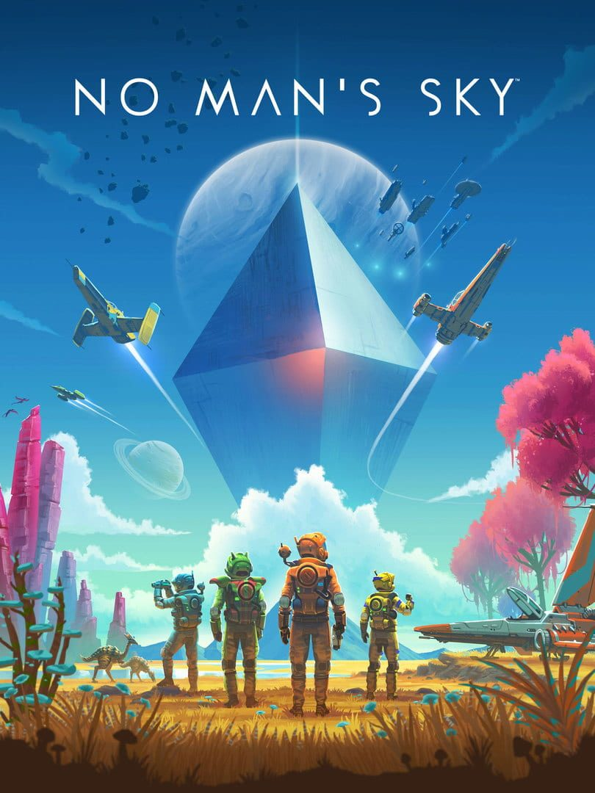

No Man's Sky
No Man's Sky
Details
|  | |
| Spielzeit | 16d 8h 35m 0s |
| Letzte Aktivität | 13.08.2022 0:31:50 |
| Hinzugefügt | 19.12.2019 |
| Modifiziert | 12.12.2022 0:59:09 |
| Fertigstellungsstatus | Abgeschlossen |
| Bibliothek | Steam |
| Quelle | Steam |
| Plattform | PC (Windows) |
| Veröffentlichungsdatum | 12.08.2016 |
| Community Bewertungen | 67 |
| Kritiker Punkte | 61 |
| Benutzerwertung | |
| Genre | Action Adventure Base Building Survival |
| Entwickler | Hello Games |
| Verleger | Hello Games |
| Eigenschaft | Achievements Cloud Saves Controller Support Co-op Multiplayer Remote Play Single Player VR Support |
| Links | Community Hub Discussions News Store Page PCGamingWiki Achievements |
| Tag | Achievements Co-Op Full Controller Support Online Pvp Physical Copy Steam Cloud |
Beschreibung
Inspired by the adventure and imagination that we love from classic science-fiction, No Man's Sky presents you with a galaxy to explore, filled with unique planets and lifeforms, and constant danger and action.
In No Man's Sky, every star is the light of a distant sun, each orbited by planets filled with life, and you can go to any of them you choose. Fly smoothly from deep space to planetary surfaces, with no loading screens, and no limits. In this infinite procedurally generated universe, you'll discover places and creatures that no other players have seen before - and perhaps never will again.
An epic voyage to the centre of a shared universe awaits, allowing you to explore, trade, fight and survive alone or with friends.
Or a trader? Find rich resources on forgotten worlds and exploit them for the highest prices. Invest in more cargo space and you'll reap huge rewards.
Or perhaps an explorer? Go beyond the known frontier and discover places and things that no one has ever seen before. Upgrade your engines to jump ever farther, and strengthen your suit for survival in toxic environments that would kill the unwary.
In No Man's Sky, every star is the light of a distant sun, each orbited by planets filled with life, and you can go to any of them you choose. Fly smoothly from deep space to planetary surfaces, with no loading screens, and no limits. In this infinite procedurally generated universe, you'll discover places and creatures that no other players have seen before - and perhaps never will again.
Now including...
Play with all 7 major updates since launch: Foundation, Pathfinder, Atlas Rises, NEXT, The Abyss, Visions and the 2.0 BEYOND update.An epic voyage to the centre of a shared universe awaits, allowing you to explore, trade, fight and survive alone or with friends.
Embark on an epic voyage
At the centre of the galaxy lies a irresistible pulse which draws you on a journey towards it to learn the true nature of the cosmos. But, facing hostile creatures and fierce pirates, you'll know that death comes at a cost, and survival will be down to the choices you make over how you upgrade your ship, your weapon and suit.Find your own destiny
Your voyage through No Man's Sky is up to you. Will you be a fighter, preying on the weak and taking their riches, or taking out pirates for their bounties? Power is yours if you upgrade your ship for speed and weaponry.Or a trader? Find rich resources on forgotten worlds and exploit them for the highest prices. Invest in more cargo space and you'll reap huge rewards.
Or perhaps an explorer? Go beyond the known frontier and discover places and things that no one has ever seen before. Upgrade your engines to jump ever farther, and strengthen your suit for survival in toxic environments that would kill the unwary.